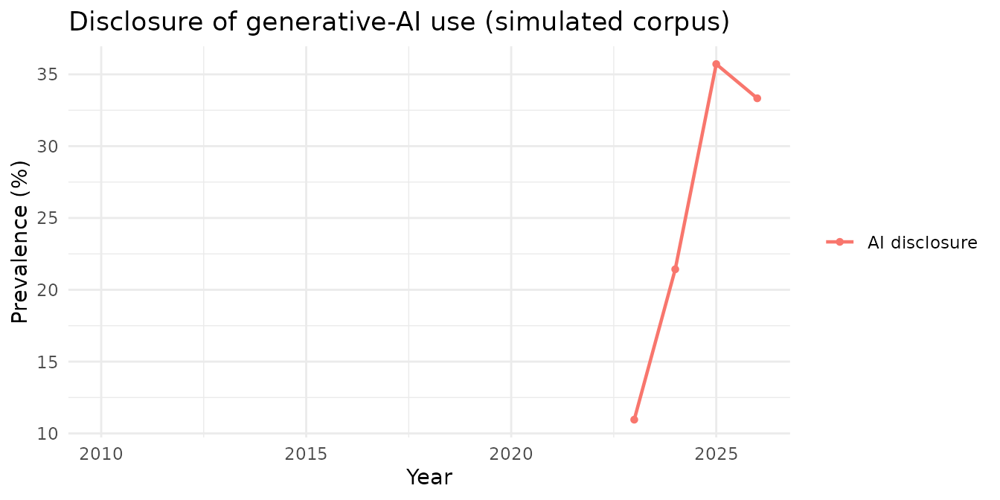
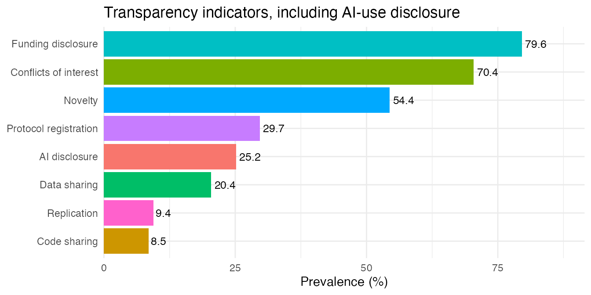

What this indicator captures
Since 2023, journals and publishers (ICMJE, COPE, Nature, Science,
Elsevier and others) have asked authors to disclose any use of
generative AI such as ChatGPT, GPT-4, Copilot, Gemini or other
large language models when preparing a manuscript.
rt_ai_pmc() detects whether an article carries such a
disclosure.
It is deliberately narrow. It targets AI used to prepare the manuscript (writing, editing, language, figures), and counts both directions of the disclosure:
- a positive disclosure: “the authors used ChatGPT to improve the readability of the manuscript”;
- a negative disclosure: “no generative AI was used in the preparation of this work”;
- a dedicated section: a “Declaration of generative AI” heading.
It does not count AI that is the article’s research method (for example a paper that trains a deep-learning classifier, or one that studies ChatGPT as its subject). Those mention AI heavily but make no statement about using AI to write the paper, so they are not disclosures. A negative lookahead also keeps the tool sense of “large language model” from being read as something the authors edited.
The 2023 year gate
The practice did not exist before 2023, so evaluating it on older
articles would be meaningless. rt_ai_pmc() therefore reads
the publication year and:
- returns
is_ai_pred = NAfor articles before 2023 (and reports theyear); - returns
TRUEorFALSEfor 2023 onward.
The bundled example article is from 2020, so it returns
NA:
xml_path <- system.file(
"extdata", "PMID32171256-PMC7071725.xml", package = "rtransparent"
)
ai <- rt_ai_pmc(xml_path, remove_ns = TRUE)
c(year = ai$year, is_ai_pred = ai$is_ai_pred)
#> year is_ai_pred
#> 2020 NAThe three possible values are easy to act on: TRUE (a
disclosure was found), FALSE (the article is from 2023 or
later but carries no disclosure), and NA (the article
predates the practice and was not assessed). rt_summary()
drops the NAs, so a corpus prevalence is computed only over
the articles where the indicator applies.
In the all-indicators output
rt_all_pmc() includes the indicator, so a single pass
over a corpus already carries year and
is_ai_pred alongside the other seven indicators:
all_indicators <- rt_all_pmc(xml_path, remove_ns = TRUE)
all_indicators[, c("pmid", "year", "is_ai_pred")]
#> # A tibble: 1 × 3
#> pmid year is_ai_pred
#> <chr> <int> <lgl>
#> 1 32171256 2020 NAAcross a corpus
Because the indicator is so new, its corpus-level story is a
trend: how fast disclosure is being adopted from 2023
onward. The bundled simulated corpus rt_demo includes an
is_ai_pred column (NA before 2023) for
illustration.
data(rt_demo)
ai_by_year <- rt_summary(rt_demo, by = "year", indicators = "is_ai_pred")
# Years before 2023 have no assessable articles (all NA), so no denominator;
# keep only the years where the indicator applies.
ai_by_year <- ai_by_year[ai_by_year$n_articles > 0, ]
knitr::kable(
ai_by_year[, c("year", "n_articles", "n_detected", "percent")],
digits = 1,
col.names = c("Year", "Assessed", "Disclosed", "%")
)| Year | Assessed | Disclosed | % |
|---|---|---|---|
| 2026 | 69 | 23 | 33.3 |
| 2025 | 70 | 25 | 35.7 |
| 2023 | 73 | 8 | 11.0 |
| 2024 | 70 | 15 | 21.4 |
Only 2023 onward carries a denominator; earlier years have no
assessable articles and are filtered out above. Plotted, the adoption
curve is the point of the indicator (rt_plot() drops the
empty earlier years automatically):
library(ggplot2)
rt_plot(rt_demo, type = "trend", year = "year", indicators = "is_ai_pred") +
ggtitle("Disclosure of generative-AI use (simulated corpus)")
It also sits naturally next to the other indicators in a single prevalence chart; the AI bar simply reflects the 2023-onward subset:

Notes on precision
On a manual validation of 1,000 open-access PMC articles (almost all
2024-2026), the indicator flagged about 16% of articles, and inspected
positives were genuine disclosures. The main thing it intentionally
avoids is treating articles that discuss ChatGPT as their
topic, or use AI as a research method, as disclosures: those
are not statements about how the manuscript was written. As with every
other indicator, rt_ai_pmc() returns the matched text
(ai_text) so a positive call can always be inspected.
For the other indicators and the corpus-summary tools used here, see the Introduction and Summarizing transparency across a corpus articles.